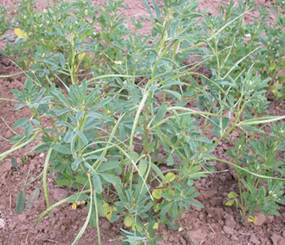
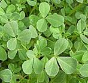
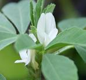
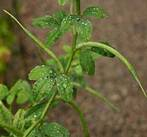
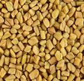

HORT 282 :: Lecture 07 :: FENUGREEK

FENUGREEK
Trigonella foenum-graecum, Fabaceae
Fenugreek, a native of south Eastern Europe and west Asia, is cultivated as a leafy vegetable, condiment and as medicinal plant. The fresh tender leaves and stem are consumed as curried vegetable and the seeds are mainly used as spice for flavoring almost all dishes. It has a high medicinal value as it prevents constipation, removes indigestion, stimulates spleen and liver and is appetizing and diuretic.
It India, it is grown in about 0.30 lakhs ha producing annually about 30000 tonnes of seeds. Out of this 1000 to 3000 tonnes are exported to Saudi Arabia, Japan, srilanka, korea and U.K., thus earning a foreign exchange worth of Rs.170 lakhs annually. The major states growing fenugreek in India is Rajasthan, Madhya Pradesh, Gujarat, Uttar Pradesh, Maharastra and Punjab.
Botany
It is an annual herb reaching a height of about 0.9 m, leaves are light green pinnately trifoliate, flowers-papilionaceous, fruits- legume, long, narrow, curved, tapering with a slender point and containing small deeply furrowed seeds. There are two species of the genus Trigonella which are of economic important viz., T. foenum graecum, the common methi and T.corniculata, the kasuri methi. These two differ in their growth habit and yield. The latter one is a slow growing type and remains in rosette condition during most of its vegetative growth period.
|
 Leaf |
 |
 |
 |
Climate and soil
It has wide adaptability and is successfully cultivated both in the tropics as well as temperature regions. It is tolerant to frost and freezing weather. It does well in places receiving moderate or low rainfall areas but not in heavy rainfall areas. It can be grown on a wide variety of soil but clayey loam is relatively better. The optimum soil pH should be 6-7 for its better growth and development.
Varieties
Variety |
Parentage |
Special Characters |
Duration |
Yield/ha |
CO 1 |
Reselection from TG 2336 |
Dual purpose quick growing, suited for intercropping, high seed protein |
90 |
685 Kg grain, 4.5 t of green |
Rajendra Kanti |
Mass selection |
High yield, medium height, bushy suited for pure as well as intercropping. Seed protein 9.5% |
120 |
1200 -1400 Kg grain |
RMt – 1 |
Pure line selection from Nagpur type |
High yield, moderately branched, moderately tolerant to root rot and powdery mildew, Seed protein 21% |
145 |
1500 kg grain |
Lam Sel. 1 |
A selection from Germplasm |
High yield, bushy plant type. Seed protein 53% |
68 |
740 Kg grain |
Land preparation and sowing
Land is prepared by ploughing thrice and beds of uniform size are prepared. Broad casting the seed in the bed and raking the surface to cover the seeds is normally followed. But, line sowing is advocated in rows at 20-25 cm apart which facilitates the inter cultural operations. Sowing in the plains is generally taken up in Sep-Nov while in the hills, it is grown from March. Approximately 20 kg of seed is required for one hectare and the seed takes about 6-8 days to complete its germination.
Manures and fertilizer
Besides 15 tonnes of farm yard manures, a fertilizer dose of 30 Kg N, 25Kg P2 O5 and 40Kg K2O per ha is recommended as basal. 20 kg N at 30 days after sowing. To obtain more successful leafy growth, nitrogen should be applied after each cutting.
Irrigation
First irrigation is given immediately after sowing and subsequent irrigation is applied at 7 to 10 days interval.
Intercultivation
Hoeing and weeding during the early stages of plant growth are required to encourage proper growth. Thinning may be done on 20-25 days to keep the distance between the plants at 10-15 cm and to retain 1-2 plants per hill. In about 25-30 days, young shoots are nipped off 4’’ above ground level and subsequent cuttings of leaves may be taken after 15 days. It is advisable to take 1-2 cuttings before the crop is allowed for flowering and fruiting. When the pods are dried, the plants are pulled out and dried in the sun and seeds are threshed by beating with stick or by rubbing with hands. Seeds are winnowed, cleaned and dried in the sun. They may be stored in gunny bags lined with paper.
Yield
500-700 kg of seeds and about 4000-5000 kg of leaves may be obtained per hectare in crops grown for both the purposes.
Plant protection
Root rot is a serious disease and can be controlled by drenching carbendazim 0.05% first at the onset of the disease and another one month.
*************
- Native of fenugreek is _____________
- Fenugreek belongs to the family _____________
- Two economic important species of fenugreek are _______ and ___________
- Improved cultivars of fenugreek are __________
- Serious disease of fenugreek is _____________
| Download this lecture as PDF here |